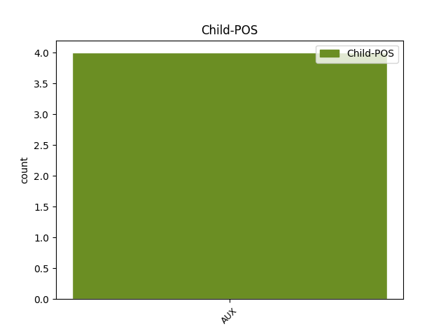

Distribution of features within this leaf


Agreement Rules sorted by frequency.
- When the dependent token is the underspecified dependency(udep) of the head token, and the head token is VERB and the dependent token is AUX.
1 बैठक _ _ _ _ 0 _ _ _
2 के _ _ _ _ 0 _ _ _
3 दौरान _ _ _ _ 0 _ _ _
4 श्रीलंका _ _ _ _ 0 _ _ _
5 की _ _ _ _ 0 _ _ _
6 तरफ़ _ _ _ _ 0 _ _ _
7 से _ _ _ _ 0 _ _ _
8 विदेश _ _ _ _ 0 _ _ _
9 मंत्री _ _ _ _ 0 _ _ _
10 लक्षमण _ _ _ _ 0 _ _ _
11 कादिरगमार _ _ _ _ 0 _ _ _
12 और _ _ _ _ 0 _ _ _
13 भारत _ _ _ _ 0 _ _ _
14 में _ _ _ _ 0 _ _ _
15 श्रीलंका _ _ _ _ 0 _ _ _
16 के _ _ _ _ 0 _ _ _
17 उच्चायुक्त _ _ _ _ 0 _ _ _
18 मंगल _ _ _ _ 0 _ _ _
19 मूनसिंघे _ _ _ _ 0 _ _ _
20 शामिल _ _ _ _ 0 _ _ _
21 थे था VERB VM Gender=Masc|Mood=Ind|Number=Plur|Tense=Past|VerbForm=Fin|Voice=Act 0 _ _ _
22 जबकि _ _ _ _ 0 _ _ _
23 मनमोहन _ _ _ _ 0 _ _ _
24 सिंह _ _ _ _ 0 _ _ _
25 के _ _ _ _ 0 _ _ _
26 साथ _ _ _ _ 0 _ _ _
27 विदेश _ _ _ _ 0 _ _ _
28 मंत्री _ _ _ _ 0 _ _ _
29 नटवर _ _ _ _ 0 _ _ _
30 सिंह _ _ _ _ 0 _ _ _
31 , _ _ _ _ 0 _ _ _
32 सुरक्षा _ _ _ _ 0 _ _ _
33 सलाहकार _ _ _ _ 0 _ _ _
34 जे. _ _ _ _ 0 _ _ _
35 एन. _ _ _ _ 0 _ _ _
36 दीक्षित _ _ _ _ 0 _ _ _
37 और _ _ _ _ 0 _ _ _
38 श्रीलंका _ _ _ _ 0 _ _ _
39 में _ _ _ _ 0 _ _ _
40 भारत _ _ _ _ 0 _ _ _
41 की _ _ _ _ 0 _ _ _
42 उच्चायुक्त _ _ _ _ 0 _ _ _
43 निरुपमा _ _ _ _ 0 _ _ _
44 राव _ _ _ _ 0 _ _ _
45 थे था AUX VM Gender=Masc|Mood=Ind|Number=Plur|Tense=Past|VerbForm=Fin|Voice=Act 21 udep _ ChunkId=VGF2|ChunkType=head|Stype=declarative|Tam=WA|Translit=the|Vib=था
46 । _ _ _ _ 0 _ _ _
Disagree Examples:
1 मीडिया _ _ _ _ 0 _ _ _
2 रिपोर्टो _ _ _ _ 0 _ _ _
3 में _ _ _ _ 0 _ _ _
4 कहा _ _ _ _ 0 _ _ _
5 जा _ _ _ _ 0 _ _ _
6 रहा _ _ _ _ 0 _ _ _
7 है _ _ _ _ 0 _ _ _
8 कि _ _ _ _ 0 _ _ _
9 रिलायंस _ _ _ _ 0 _ _ _
10 कैपिटल _ _ _ _ 0 _ _ _
11 किसके _ _ _ _ 0 _ _ _
12 हिस्से _ _ _ _ 0 _ _ _
13 में _ _ _ _ 0 _ _ _
14 जाएगा जा VERB VM Gender=Masc|Mood=Ind|Number=Sing|Person=3|Tense=Fut|VerbForm=Fin|Voice=Act 0 _ _ _
15 , _ _ _ _ 0 _ _ _
16 इसको _ _ _ _ 0 _ _ _
17 लेकर _ _ _ _ 0 _ _ _
18 भ्रम _ _ _ _ 0 _ _ _
19 की _ _ _ _ 0 _ _ _
20 स्थिति _ _ _ _ 0 _ _ _
21 है है AUX VM Mood=Ind|Number=Sing|Person=3|Tense=Pres|VerbForm=Fin|Voice=Act 14 udep _ ChunkId=VGF3|ChunkType=head|SpaceAfter=No|Stype=declarative|Tam=hE|Translit=hai|Vib=है
22 , _ _ _ _ 0 _ _ _
23 लेकिन _ _ _ _ 0 _ _ _
24 सूत्रों _ _ _ _ 0 _ _ _
25 ने _ _ _ _ 0 _ _ _
26 संकेत _ _ _ _ 0 _ _ _
27 दिया _ _ _ _ 0 _ _ _
28 है _ _ _ _ 0 _ _ _
29 कि _ _ _ _ 0 _ _ _
30 यह _ _ _ _ 0 _ _ _
31 कंपनी _ _ _ _ 0 _ _ _
32 अनिल _ _ _ _ 0 _ _ _
33 के _ _ _ _ 0 _ _ _
34 हिस्से _ _ _ _ 0 _ _ _
35 में _ _ _ _ 0 _ _ _
36 जा _ _ _ _ 0 _ _ _
37 सकती _ _ _ _ 0 _ _ _
38 है _ _ _ _ 0 _ _ _
39 । _ _ _ _ 0 _ _ _
1 लेकिन _ _ _ _ 0 _ _ _
2 बूटा _ _ _ _ 0 _ _ _
3 सिंह _ _ _ _ 0 _ _ _
4 वास्तव _ _ _ _ 0 _ _ _
5 में _ _ _ _ 0 _ _ _
6 क्या _ _ _ _ 0 _ _ _
7 करेंगे कर VERB VM Gender=Masc|Mood=Ind|Number=Sing|Person=3|Polite=Form|Tense=Fut|VerbForm=Fin|Voice=Act 0 _ _ _
8 यह _ _ _ _ 0 _ _ _
9 कांग्रेसी _ _ _ _ 0 _ _ _
10 ही _ _ _ _ 0 _ _ _
11 जानते _ _ _ _ 0 _ _ _
12 हैं है AUX VAUX Mood=Ind|Number=Plur|Person=3|Tense=Pres|VerbForm=Fin 7 mod _ ChunkId=VGF2|ChunkType=child|Tam=hE|Translit=haiṁ|Vib=है
13 । _ _ _ _ 0 _ _ _
1 पूर्व _ _ _ _ 0 _ _ _
2 में _ _ _ _ 0 _ _ _
3 पार्टी _ _ _ _ 0 _ _ _
4 ने _ _ _ _ 0 _ _ _
5 फैसला _ _ _ _ 0 _ _ _
6 लिया _ _ _ _ 0 _ _ _
7 था _ _ _ _ 0 _ _ _
8 कि _ _ _ _ 0 _ _ _
9 भाजपा _ _ _ _ 0 _ _ _
10 शासित _ _ _ _ 0 _ _ _
11 राज्य _ _ _ _ 0 _ _ _
12 वैट _ _ _ _ 0 _ _ _
13 लागू _ _ _ _ 0 _ _ _
14 नहीं _ _ _ _ 0 _ _ _
15 करेंगे _ _ _ _ 0 _ _ _
16 , _ _ _ _ 0 _ _ _
17 लेकिन _ _ _ _ 0 _ _ _
18 अब _ _ _ _ 0 _ _ _
19 इसे _ _ _ _ 0 _ _ _
20 लागू _ _ _ _ 0 _ _ _
21 हुए _ _ _ _ 0 _ _ _
22 नौ _ _ _ _ 0 _ _ _
23 - _ _ _ _ 0 _ _ _
24 दस _ _ _ _ 0 _ _ _
25 महीने _ _ _ _ 0 _ _ _
26 हो _ _ _ _ 0 _ _ _
27 चुके _ _ _ _ 0 _ _ _
28 हैं _ _ _ _ 0 _ _ _
29 और _ _ _ _ 0 _ _ _
30 इस _ _ _ _ 0 _ _ _
31 पर _ _ _ _ 0 _ _ _
32 पार्टी _ _ _ _ 0 _ _ _
33 की _ _ _ _ 0 _ _ _
34 भावी _ _ _ _ 0 _ _ _
35 रणनीति _ _ _ _ 0 _ _ _
36 क्या _ _ _ _ 0 _ _ _
37 होगी हो VERB VM Gender=Fem|Mood=Ind|Number=Sing|Person=3|Tense=Fut|VerbForm=Fin|Voice=Act 0 _ _ _
38 , _ _ _ _ 0 _ _ _
39 यह _ _ _ _ 0 _ _ _
40 भी _ _ _ _ 0 _ _ _
41 बैठक _ _ _ _ 0 _ _ _
42 में _ _ _ _ 0 _ _ _
43 तय _ _ _ _ 0 _ _ _
44 होने _ _ _ _ 0 _ _ _
45 की _ _ _ _ 0 _ _ _
46 उम्मीद _ _ _ _ 0 _ _ _
47 है है AUX VM Mood=Ind|Number=Sing|Person=3|Tense=Pres|VerbForm=Fin|Voice=Act 37 udep _ ChunkId=VGF5|ChunkType=head|Stype=declarative|Tam=hE|Translit=hai|Vib=है
48 । _ _ _ _ 0 _ _ _
1 लेकिन _ _ _ _ 0 _ _ _
2 इलाहाबाद _ _ _ _ 0 _ _ _
3 विश्वविद्यालय _ _ _ _ 0 _ _ _
4 को _ _ _ _ 0 _ _ _
5 केंद्रीय _ _ _ _ 0 _ _ _
6 दर्जा _ _ _ _ 0 _ _ _
7 मिलने _ _ _ _ 0 _ _ _
8 की _ _ _ _ 0 _ _ _
9 स्थिति _ _ _ _ 0 _ _ _
10 में _ _ _ _ 0 _ _ _
11 उससे _ _ _ _ 0 _ _ _
12 संबद्ध _ _ _ _ 0 _ _ _
13 कॉलेजों _ _ _ _ 0 _ _ _
14 की _ _ _ _ 0 _ _ _
15 स्थिति _ _ _ _ 0 _ _ _
16 क्या _ _ _ _ 0 _ _ _
17 होगी हो VERB VM Gender=Fem|Mood=Ind|Number=Sing|Person=3|Tense=Fut|VerbForm=Fin|Voice=Act 0 _ _ _
18 , _ _ _ _ 0 _ _ _
19 यह _ _ _ _ 0 _ _ _
20 अभी _ _ _ _ 0 _ _ _
21 साफ _ _ _ _ 0 _ _ _
22 नहीं _ _ _ _ 0 _ _ _
23 है है AUX VM Mood=Ind|Number=Sing|Person=3|Tense=Pres|VerbForm=Fin|Voice=Act 17 udep _ ChunkId=VGF2|ChunkType=head|Stype=declarative|Tam=hE|Translit=hai|Vib=है
24 । _ _ _ _ 0 _ _ _
1 मंत्रालय _ _ _ _ 0 _ _ _
2 के _ _ _ _ 0 _ _ _
3 एक _ _ _ _ 0 _ _ _
4 अधिकारी _ _ _ _ 0 _ _ _
5 के _ _ _ _ 0 _ _ _
6 मुताबिक _ _ _ _ 0 _ _ _
7 इस _ _ _ _ 0 _ _ _
8 बैठक _ _ _ _ 0 _ _ _
9 में _ _ _ _ 0 _ _ _
10 निदेशकों _ _ _ _ 0 _ _ _
11 से _ _ _ _ 0 _ _ _
12 यह _ _ _ _ 0 _ _ _
13 जानने _ _ _ _ 0 _ _ _
14 की _ _ _ _ 0 _ _ _
15 भी _ _ _ _ 0 _ _ _
16 कोशिश _ _ _ _ 0 _ _ _
17 होगी हो VERB VM Gender=Fem|Mood=Ind|Number=Sing|Person=3|Tense=Fut|VerbForm=Fin|Voice=Act 0 _ _ _
18 क्या _ _ _ _ 0 _ _ _
19 पिछले _ _ _ _ 0 _ _ _
20 दिनों _ _ _ _ 0 _ _ _
21 आईआईएम _ _ _ _ 0 _ _ _
22 , _ _ _ _ 0 _ _ _
23 बंगलोर _ _ _ _ 0 _ _ _
24 के _ _ _ _ 0 _ _ _
25 संबंध _ _ _ _ 0 _ _ _
26 में _ _ _ _ 0 _ _ _
27 लिए _ _ _ _ 0 _ _ _
28 गए _ _ _ _ 0 _ _ _
29 फैसले _ _ _ _ 0 _ _ _
30 से _ _ _ _ 0 _ _ _
31 उनकी _ _ _ _ 0 _ _ _
32 स्वायत्तता _ _ _ _ 0 _ _ _
33 को _ _ _ _ 0 _ _ _
34 ठेस _ _ _ _ 0 _ _ _
35 पहुंची _ _ _ _ 0 _ _ _
36 है है AUX VAUX Mood=Ind|Number=Sing|Person=3|Tense=Pres|VerbForm=Fin 17 mod _ ChunkId=VGF2|ChunkType=child|Tam=hE|Translit=hai|Vib=है
37 । _ _ _ _ 0 _ _ _